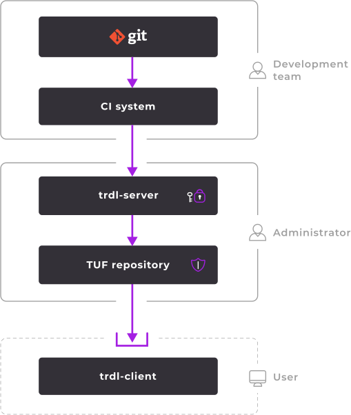

<section class="intro__section">
  <div class="container">
    <div class="intro__wrap">
      <div class="intro__content">
        <div class="intro__title block__title">Secure and continuous delivery</div>
        <div class="intro__subtitle block__subtitle">Simple, reliable, and fast</div>
        <div class="intro__desc block__description">
          <p>
            <b>trdl</b> is an Open Source solution providing a secure channel for delivering updates from the Git repository to the end user.
          </p>
          <p>
            The project team releases new versions of the software and switches them in the release channels. Git acts as the single source of truth while <span class="footnote footnote--dark" title="HashiCorp's Vault is a secret management tool. In trdl, we use a custom Vault plugin tailored for secure package delivery. <a href='https://www.hashicorp.com/products/vault' target='_blank'>Learn more about Vault</a>.">Vault</span> is used as a tool to verify operations as well as populate and maintain the <span class="footnote footnote--dark" title='TUF (The Update Framework) is a framework for securing software update systems. A TUF repository is any repository containing your software (e.g., S3) that uses TUF security tools. <a href="https://theupdateframework.io/" target="_blank">Learn more about TUF</a>.'>TUF repository</span>.
          </p>
          <p>
            The user selects a release channel, continuously receives the latest <span class="footnote footnote--dark" title='In this case, "software" refers to any form of programming code, e.g., a binary file, a shell script, or even an Ansible playbook.'>software</span> version from the TUF repository, and uses it.
          </p>
        </div>
        <div class="intro__buttons">
          <a href="https://github.com/werf/trdl" target="_blank" class="intro__link">
            <button class="intro__button--gh button">GitHub</button>
          </a>
        </div>
      </div>
      <div class="intro__scheme">
        
      </div>
    </div>
  </div>
</section>